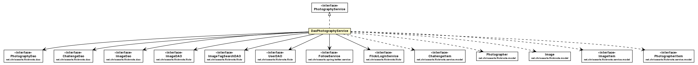

net.chrissearle.flickrvote.service
Class DaoPhotographyService

java.lang.Object
 net.chrissearle.flickrvote.service.DaoPhotographyService
net.chrissearle.flickrvote.service.DaoPhotographyService
- All Implemented Interfaces:
- PhotographyService
@Service(value="photographyService")
@Transactional
public class DaoPhotographyService
- extends Object
- implements PhotographyService
| Methods inherited from class java.lang.Object |
clone, equals, finalize, getClass, hashCode, notify, notifyAll, toString, wait, wait, wait |
DaoPhotographyService
public DaoPhotographyService(PhotographyDao photographyDao,
ChallengeDao challengeDao,
ImageDao imageDao,
FlickrService flickrService,
TwitterService twitterService)
setAdministrator
public void setAdministrator(String id,
Boolean adminFlag)
- Specified by:
setAdministrator in interface PhotographyService
isAdministrator
public Boolean isAdministrator(String username)
- Specified by:
isAdministrator in interface PhotographyService
retrieveAndStorePhotographer
public PhotographerItem retrieveAndStorePhotographer(String id)
- Specified by:
retrieveAndStorePhotographer in interface PhotographyService
checkLoginAndStore
public PhotographerItem checkLoginAndStore(String frob)
- Specified by:
checkLoginAndStore in interface PhotographyService
getChallengeImages
public ChallengeItem getChallengeImages(String tag)
- Specified by:
getChallengeImages in interface PhotographyService
getLoginUrl
public URL getLoginUrl()
- Specified by:
getLoginUrl in interface PhotographyService
retrieveAndStoreImage
public ImageItem retrieveAndStoreImage(String id,
String tag)
- Specified by:
retrieveAndStoreImage in interface PhotographyService
retrieveAndStoreImage
public ImageItem retrieveAndStoreImage(String id,
String tag,
boolean replaceExisting)
setScore
public void setScore(String imageId,
Long score)
- Specified by:
setScore in interface PhotographyService
getImagesForPhotographer
public Set<ImageItem> getImagesForPhotographer(String id)
- Specified by:
getImagesForPhotographer in interface PhotographyService
freezeChallenge
public void freezeChallenge()
- Specified by:
freezeChallenge in interface PhotographyService
getGoldWinners
public Set<ImageItem> getGoldWinners()
- Specified by:
getGoldWinners in interface PhotographyService
setTwitter
public PhotographerItem setTwitter(String id,
String twitter)
- Specified by:
setTwitter in interface PhotographyService
getPhotographers
public List<PhotographerItem> getPhotographers()
- Specified by:
getPhotographers in interface PhotographyService
findById
public PhotographerItem findById(String id)
- Specified by:
findById in interface PhotographyService
checkSearch
public Map<String,String> checkSearch(String tag)
- Specified by:
checkSearch in interface PhotographyService
checkTwitterExists
public boolean checkTwitterExists(String twitter)
- Specified by:
checkTwitterExists in interface PhotographyService
findImageById
public ImageItem findImageById(String imageId)
- Specified by:
findImageById in interface PhotographyService
Copyright © 2007-2009. All Rights Reserved.